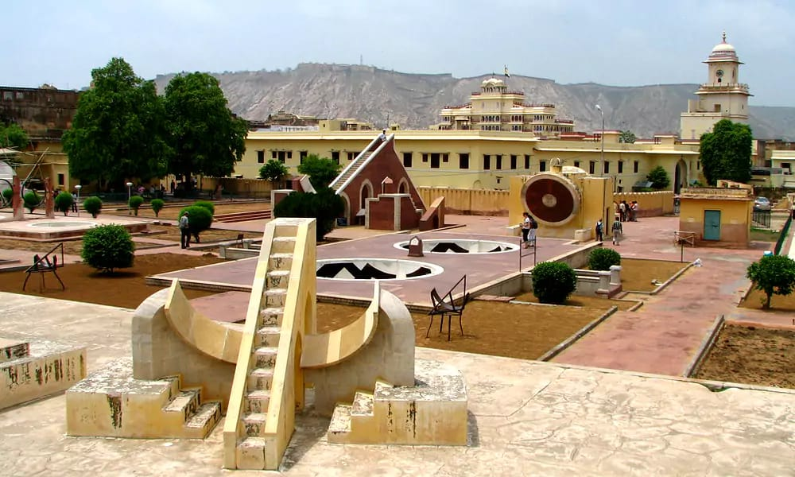
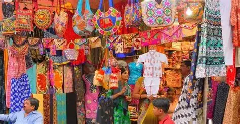

The most visited places in Jaipur, known as the "Pink City," include the iconic Amer Fort, the intricate Hawa Mahal (Palace of Winds), the historical City Palace, the ancient astronomical observatory Jantar Mantar, and the scenic Nahargarh Fort.
Other popular attractions are Jal Mahal (Water Palace) and shopping at bustling bazaars like Johari Bazaar.
Jantar Mantar:
An ancient astronomical observatory featuring a collection of large-scale astronomical instruments.

Johari Bazaar & Bapu Bazaar:
Popular markets where visitors can find traditional Rajasthani textiles, jewelry, and handicrafts.

Birla Temple:
A beautiful Hindu temple made of white marble, dedicated to the god Vishnu.
Panna Meena ka Kund:
An ancient stepwell located near Amer Fort, known for its symmetrical steps.